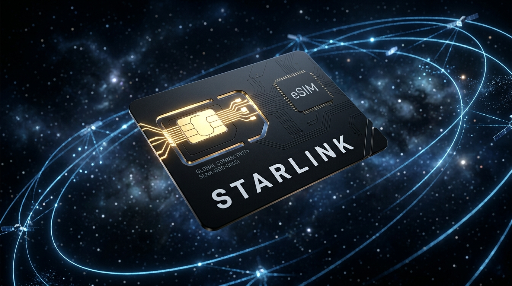

Internet Via Satélite Direto no Seu Celular.
Transforme seu smartphone em um modem via satélite. Com mais de 7.000 satélites em órbita baixa, a Starlink leva conectividade para onde as redes tradicionais não chegam.
Até 150 Mbps para download*
Ideal para jogos, streaming e vídeo
Conecte-se em qualquer lugar do Brasil
Digite seu CEP ou cidade para simular a conexão em tempo real com a nossa constelação de satélites em órbita baixa.
Ativação instantânea diretamente no seu celular, sem necessidade de antenas físicas ou cabeamento. Conecte-se aos satélites Starlink em segundos.
Após a liberação do seu plano, basta escanear o QR Code recebido no seu e-mail para configurar o eSIM no seu smartphone e começar a usar imediatamente.
Aproveite a tecnologia celular de órbita baixa para se conectar diretamente aos satélites Starlink, garantindo internet estável mesmo em locais sem qualquer cobertura de operadoras terrestres.
Compatível com todos os smartphones modernos que suportam a tecnologia eSIM (iPhone, Samsung Galaxy, Xiaomi, Motorola, etc.). Sem necessidade de equipamentos adicionais.

Veja o impacto da Starlink na vida de quem dependia de internet lenta.
"Moro no interior de Mato Grosso, a internet via rádio aqui vivia caindo e não passava de 5 megas. Com a Starlink consigo assistir em 4K e meu filho joga online sem travar. Mudou nossa vida no campo!"
"Ativação ridiculamente simples. Escaneei o QR Code recebido, configurei o eSIM no celular e em 2 minutos já estava navegando a 180 Mbps. Recomendo para qualquer um que precise de internet rápida em viagens."
"Sou nômade digital e viajo com meu motorhome. Com o eSIM Starlink consigo trabalhar de qualquer praia isolada ou montanha conectada diretamente do meu próprio smartphone. Conexão nota 10."
Tire suas dúvidas sobre o funcionamento da Starlink no Brasil.
O eSIM Starlink é um chip digital. Após a assinatura do seu plano, você recebe um QR Code de ativação no seu e-mail cadastrado em poucos minutos. Basta acessar as configurações de rede do seu celular, escanear o código e a conexão satelital será ativada automaticamente no seu smartphone.
Sim. Os satélites de órbita baixa da Starlink transmitem sinais fortes que penetram nuvens e chuva. Como o eSIM funciona diretamente no seu celular configurado, a estabilidade e a recepção de dados são mantidas de forma consistente e com alta performance.
Não. A rede eSIM Starlink opera em frequências especiais e se conecta diretamente à constelação de satélites em órbita baixa. Isso garante sinal de internet estável e navegação de alta velocidade mesmo em áreas rurais remotas onde nenhuma outra operadora de celular terrestre tem sinal.
Qualquer smartphone moderno compatível com a tecnologia eSIM (chip virtual) é suportado. Isso inclui iPhones (modelo XR ou superior), linha Samsung Galaxy (S20 ou superior), modelos premium da Xiaomi, Motorola e Google Pixel. Se o seu aparelho suporta chip virtual, ele funcionará com a Starlink.
Não. O plano eSIM Starlink funciona no modelo de assinatura mensal recorrente pré-paga e é totalmente livre de fidelidade. Você pode assinar, utilizar durante viagens ou trabalho remoto temporário no campo, e cancelar a qualquer momento sem nenhuma multa ou burocracia.